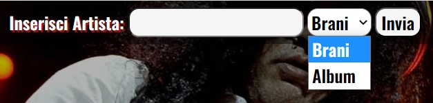

Come funziona?
Il funzionamento base del sito e' molto semplice,in quanto consente di cercare per ogni artista inserito,
i suoi brani di maggior successo e gli ultimi album pubblicati,per restare sempre sul pezzo!
 Cliccando sulla finestra a scorrimento si apriranno le due opzioni,intercambiabili a seconda della richiesta.
Cliccando sulla finestra a scorrimento si apriranno le due opzioni,intercambiabili a seconda della richiesta.

Selezionando "Brani" verra' mostrato un elenco dei 15 brani piu' celebri dell'artista desiderato,mentre scegliendo l'opzione "Album"
saranno visualizzati gli ultimi 20 album in ordine di uscita,direttamente dall'archivio di Spotify.